OpenFold Consortium Adds Eleven New Members
The consortium welcomed eleven new members, reflecting growing industry momentum behind open AI infrastructure for biology and drug discovery.

OpenFold is a non-profit consortium building free, open-source AI tools for structural biology, trained, auditable, and available to everyone.
The consortium welcomed eleven new members, reflecting growing industry momentum behind open AI infrastructure for biology and drug discovery.
The Rocklin Lab released a megascale open dataset of protein stability measurements to accelerate biomolecular AI research.
OpenFold and UW's Institute for Protein Design launched a research fellowship to advance open-source AI for protein structure prediction and design.
The annual gathering of the open biomolecular AI community.
A community blind challenge for structure-enabled property and interaction quantification.
OpenFold is built by a community that believes core structural-biology infrastructure should be open, reproducible, and extensible. Choose the contribution path that fits you best.
Consortium members contribute financially and/or technically and participate in community-driven roadmap decisions. Membership is primarily intended for organizations and is formalized through a participation agreement.
We welcome collaborations with researchers, academic labs, non-profits, and teams with aligned projects that improve rigor, usability, and real-world adoption.
OpenFold is hosted by the Open Molecular Software Foundation (OMSF), a 501(c)3 non-profit. Individuals, foundations, and Donor-Advised Funds can fund OMSF directly with OpenFold in the memo.